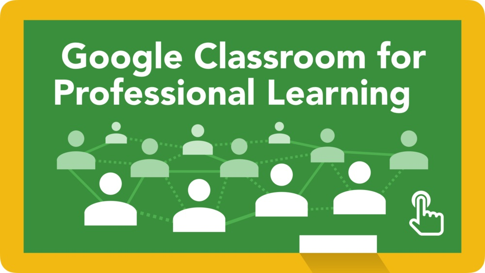
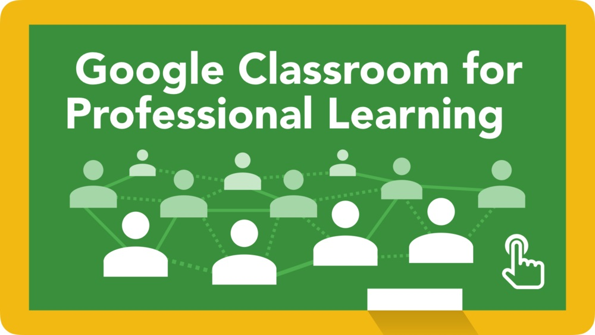

Smart Technology
Io T Devices

 

1. 3D Printing
This technology has the potential to change the way students learn about engineering, giving them the opportunity to design and produce prototypes easily. It also can be used to create accurate 3D models for science classes or art projects.
2. Augmented Reality (AR)
AR devices allow students to experience their lessons as if they were right in front of them. For example, medical students can see a 3D model of anatomy and interact with it in a virtual environment. However, AR will surely become a staple in classrooms in the future, as students of all ages can benefit from an interactive learning experience.
3. Smartboards
Interactive, connected display boards can take the place of whiteboards in most classroom environments. This type of boards offer a much better, engaging and interactive experience for students. They can be used to display videos and photos alongside hand-written notes to create a multimedia approach to presenting material. Since they are easy to use, they can also function as an aid for students when delivering classroom presentations.
4. Cloud servers
Students are able to access all of the materials they need through the cloud. This could eliminate the need for the traditional computer lab or expansive library facilities. Not to mention the fact that schools save a lot of money by ditching on-premises servers, which are expensive and require more personnel to run. Instead, they have time to focus more on professional development for teachers.
5. Video conferencing
High-speed Internet can connect lecture halls in different parts of the world and allow students in different locations to participate in the same lessons. This also can be an effective way for learners to collaborate across large distances. In fact, video conferencing offers a wide range of opportunities, from teaching a class while being out of town, to organizing meetings with parents who cannot participate at face to face meetings.
6. Tablet
Using handheld devices as digital textbooks can enable students to have greater interaction with the material through mixed media. Students also can save money over the cost of printed books. As digital natives, they are also more comfortable in using tablets so it just makes sense to use them primarily for learning. In addition, they can easily access their school LMS anytime and anywhere, making it the perfect solution for students of all ages.